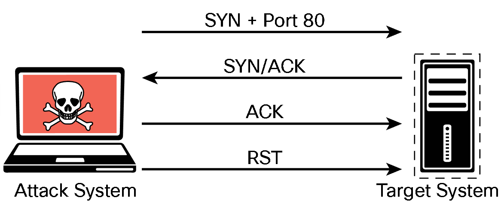

3.2.2 Nmap Scan Types
TCP Connect Scan (-sT)
UDP Scan (-sU)
TCP FIN Scan (-sF)
Host Discovery Scan (-sn)
Timing Options (-T 0-5)
TCP Connect Scan ( -sT )
nmap -sT 192.168.88.251

UDP Scan ( -sU )
nmap -sU -p 53 192.168.88.251

TCP FIN Scan ( -sF )
nmap -sF -p 80 192.168.88.251


Host Discovery Scan ( -sn )
nmap -sn 192.168.88.0/24
Timing Options ( -T 0-5 )
-T0 (Paranoid) : Very slow, used for IDS evasion
-T1 (Sneaky) : Quite slow, used for IDS evasion
-T2 (Polite) : Slows down to consume less bandwidth, runs about 10 times slower than the default
-T3 (Normal) : Default, a dynamic timing model based on target responsiveness
-T4 (Aggressive) : Assumes a fast and reliable network and may overwhelm targets
-T5 (Insane) : Very aggressive; will likely overwhelm targets or miss open ports

3.2.4 Types of Enumeration
Host Enumeration
User Enumeration
Group Enumeration
Network Share Enumeration
Additional SMB Enumeration Examples
Web Page Enumeration/Web Application Enumeration
Service Enumeration
Exploring Enumeration via Packet Crafting
Host Enumeration
nmap -sP 192.168.88.0/24.
User Enumeration
nmap --script smb-enum-users.nse 192.168.88.251
Group Enumeration
nmap --script smb-enum-groups.nse --script-args smbusername=vagrant,smbpass=vagrant 192.168.56.3
Network Share Enumeration
nmap --script smb-enum-shares.nse -p 445 192.168.88.251
Additional SMB Enumeration Examples
nmap -sC 192.168.88.251
Enumerating Additional Information Using enum4linux
enum4linux 192.168.88.251
Web Page Enumeration/Web Application Enumeration
nmap -sV --script=http-enum -p 80 192.168.88.251
Nikto scan
nikto -h 192.168.88.251
Service Enumeration
nmap --script smb-enum-processes.nse --script-args smbusername=<username>, smbpass=<password> -p445 <host>
3.2.6 Lab - Enumeration with Nmap
Part 2: Perform Basic Nmap Scans
Step 1: Initiate a basic Nmap scan of the target computer.
└─$ nmap -sn 10.6.6.0/24
# discovery scan
└─$ nmap 10.6.6.23
# basic scan
└─$ sudo nmap -O 10.6.6.23
# operating system info
Step 2: Obtain additional information about the host and services.
└─$ nmap -v -p21 -sV -T4 10.6.6.23
# port FTP version info, T4 is faster scan
└─$ nmap -p21 -sV -A 10.6.6.23
# scan detailed information, very intrusive
3.2.9 Lab - Packet Crafting with Scapy
Install and run Scapy in Kali Linux
Ping cisco.com and sniff the sent packages using Scapy
Create and Send an ICMP Packet.
Create and Send TCP SYN Packets.
3.2.10 Lab - Network Sniffing with Wireshark
Run tcpdump in kali (special command)
Open browser, google.com
Open skillsforall.com, login to ur account
stop tcpdump. Inspect the outputted file w/ Wireshark
Filter DNS packet
Run Wireshark
Run Metasploitable > DVWA
Login > Instruction
Stop wireshark scan
Inspect HTTP, username password in it, and PHPSESSID
<end>